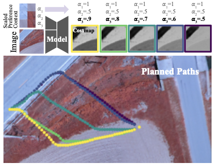
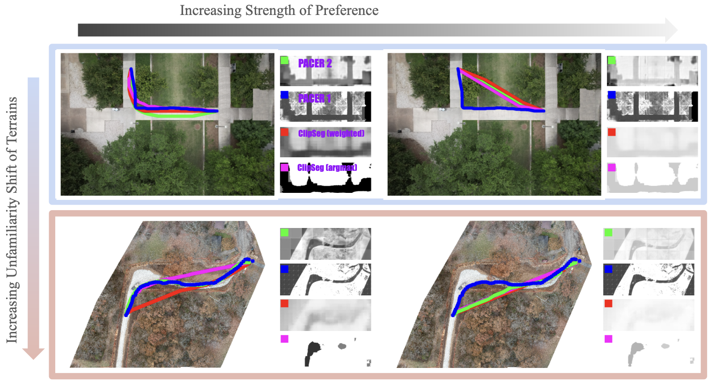
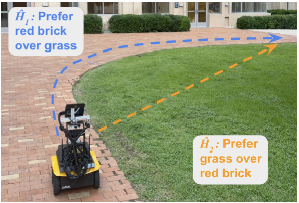
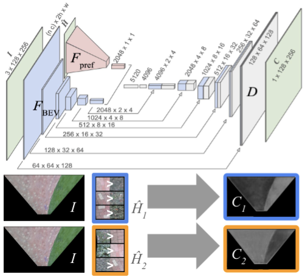
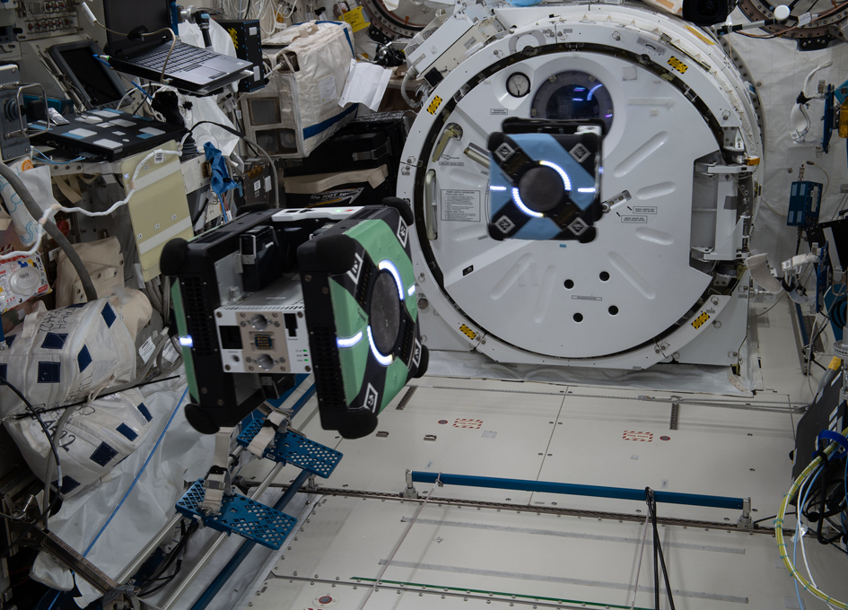
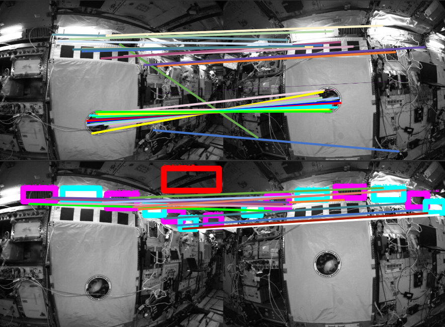
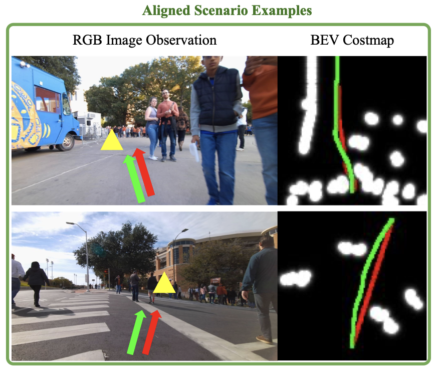
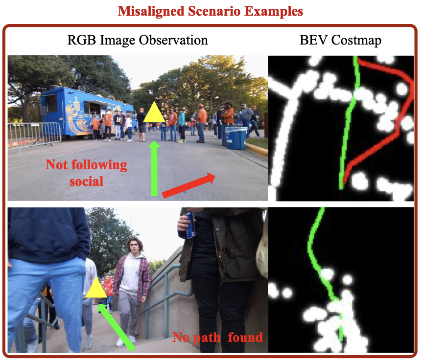

|
Luisa Mao
I am a researcher interested in robot learning, reinforcement learning, and
visuomotor policies. I am a member of the Autonomous Mobile Robotics Lab (AMRL),
and am advised by Dr. Joydeep Biwas and Dr. Peter Stone
at the University of Texas at Austin.
My current interests are in vision-based control policies for humanoid robots. I have interned on the Optimus AI team at Tesla,
and am currently working on research into humanoid soccer for the the RoboCup Soccer competition.
Email /
CV /
Scholar /
GitHub
|
|
Research
My past research has focused on robot learning
and learning from human preferences
for vision-based navigation and localization.
|
|


|
Terrain Costmap Generation via Scaled Preference Conditioning
Luisa Mao, Garrett Warnell, Peter Stone, Joydeep Biswas
RA-L (submitted), 2026
PDF
Building on prior work in learning from human preferences, we propose a more expressive method for generating terrain costmaps.
|
|


|
PACER: Preference-conditioned All-terrain Costmap Generation
Luisa Mao, Garrett Warnell, Peter Stone, Joydeep Biswas
RA-L, 2025
PDF /
Code
PACER is a novel method for generating all-terrain costmaps conditioned on human preferences. PACER leverages preference-conditioned learning to adaptively model terrain traversability, enabling robots to navigate complex environments in accordance with user-defined criteria.
|
|


|
Semantic Masking and Visual Feature Matching for Robust Localization
Luisa Mao, Ryan Soussan, Brian Coltin, Trey Smith, Joydeep Biswas
ISPARO, 2024
PDF
Visual localization methods that rely on feature matching often fail in environments with significant appearance changes. We propose a method that uses semantic segmentation to mask out dynamic or unreliable regions in images, improving the robustness of feature matching for localization.
|
|


|
Targeted Learning: A Hybrid Approach to Social Robot Navigation
Amir Hossain Raj, Zichao Hu, Haresh Karnan, Rohan Chandra, Amirreza Payandeh, Luisa Mao, Peter Stone, Joydeep Biswas,
Xuesu Xiao
ICRA, 2024
PDF /
Video
We find that geometric systems can produce trajectory plans that align with the human demonstrations in a large number of social situations. We, therefore, rethink the social robot navigation problem by leveraging the advantages of both geometric and learning-based methods.
|
Frodobots Earth Rovers Challenge @ IROS 2024
PDF
I participated with the UT Austin team on an open-world navigation challenge held at IROS in 2024.
|
BARN Challenge @ ICRA 2023
PDF
I made a navigation stack for the Clearpath Jackal and got to attend a competition at ICRA in London in 2023.
|
Autonomous Driving Navigation Stack for CS393R in Fall 2023
Code
An autonomous navigation and control stack for F1/10 race cars from the CS393R graduate class at UT Austin.
|
|